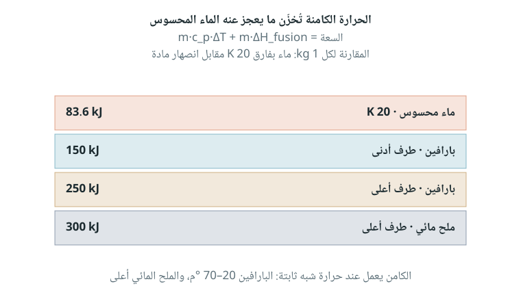

مادة تغيير الطور
Phase change material
مادة تغيير الطور PCM هي مادة تخزّن الطاقة الحرارية الكامنة عند تبدّل طورها، فتمتص حرارة كبيرة عند حرارة شبه ثابتة. وتُستعمل لتخزين الطاقة وتخفيف ذروة الحمل. أشهرها البارافين والأملاح المائية، وتتراوح حرارة انصهارها بين −20 و+80 °C بحسب التطبيق.
المادة العادية ترفع حرارتها عند التسخين بحسب حرارتها النوعية، وهذا يخزّن كمية محدودة. أما مادة تغيير الطور فتمتص عند الانصهار حرارة كامنة كبيرة بلا ارتفاع في الحرارة، فتعمل كخزّان حراري عند حرارة ثابتة تقريباً. ولهذا تُستعمل في تبريد المباني نهاراً وتخزين الحرارة شمسياً. مثال: 1.0 kg من البارافين بحرارة انصهار 40 °C وحرارة كامنة 200 kJ/kg تخزّن عند الانصهار 200 kJ، أي ما يعادل تسخين 1.0 kg من الماء بنحو 48 K، مع أن الماء له حرارة نوعية عالية.
كيف تعمل الظاهرة؟
عند الانصهار تتفكك الشبكة البلورية جزئياً، وتُستهلك طاقة في كسر الروابط بين الجزيئات بلا زيادة في الطاقة الحركية، فلا ترتفع الحرارة. وتُخزَّن هذه الطاقة في الحالة السائلة وتُسترد عند التجمّد. ولهذا تكون الحرارة ثابتة تقريباً أثناء التبدّل، وهو ما يجعل المادة خزّاناً حرارياً عند حرارة محددة. والعيب أن البارافين موصل رديء، فتنصهر الطبقة القريبة من السطح أولاً وتعزل ما تحتها، فيبطؤ الشحن.
العلاقة بالأرقام
Q = m·ΔH_fusion عند التبدّل، وQ = m·c_p·ΔT في الطور الواحد. مثال: 10 kg بارافين بـΔH = 200 kJ/kg تخزّن 2000 kJ = 0.556 kWh عند الانصهار. ولو أُريد تخزين الكمية نفسها بالماء بمدى 20 K لزم 2000/(4.18×20) = 23.9 kg، أي 2.4 ضعف الكتلة. لكن البارافين يحتاج مساحة تبادل أكبر لأن k = 0.2 مقابل 0.6 للماء.
مفاهيم متقاربة
يُفرَّق بين مادة تغيير الطور والمادة ذات الحرارة النوعية العالية: الأولى تخزّن كامناً عند حرارة ثابتة والثانية محسوساً مع ارتفاع الحرارة. ويُفرَّق بين الحرارة الكامنة للانصهار والتبخر: الثانية أكبر 5–20 مرة لكنها تحتاج حجماً أكبر بكثير. ويُفرَّق بين البارافين والأملاح المائية: الأول مستقر كيميائياً وتوصيليته منخفضة، والثانية أعلى كامناً لكنها تعاني التبريد الفائق. وأخيراً يُفرَّد بين التخزين الكامن والتخزين الكيميائي الحراري، حيث يعتمد الثاني على تفاعل عكوس.
حدود التطبيق
مادة تغيير الطور لا تعمل إن لم تُستعمل دورياً في نطاق طورها، فقد تتدهور بالدورات المتكررة. ولا تعطي قدرة عالية فوراً لأن توصيليتها منخفضة، فتحتاج مبادلات مكبّرة. ولا تصف الأملاح المائية بلا معالجة التبريد الفائق وانفصال الأطوار. ولا تصف المواد عند حرارة أعلى من استقرارها الكيميائي. وأخيراً لا تصف التطبيقات التي تحتاج مدى حراري واسعاً، حيث تفيد الحرارة المحسوسة أكثر.

| الكمية | القيمة | المصدر |
|---|---|---|
| الحرارة الكامنة للبارافين | 150–250 kJ/kg | [1] |
| توصيلية البارافين الحرارية | 0.2 W/(m·K) | [2] |
| الحرارة النوعية للماء | 4.18 kJ/(kg·K) | [1] |
المصادر
- 1 Specific Heat Capacity of Water: Temperature-Dependent Data and Calculator — The Engineering ToolBox (2026). www.engineeringtoolbox.com/specific-heat-capacity-water-d_660.html · اطُّلع عليه 2026-11-22
- 2 Thermal Conductivity of Common Materials - Solids, Liquids and Gases — The Engineering ToolBox (2026). www.engineeringtoolbox.com/thermal-conductivity-d_429.html · اطُّلع عليه 2026-11-22
استشهد بهذا المصطلح
الصيغتان مبنيتان من بيانات الصفحة نفسها: العنوان والتاريخ ورابط النسخة المنشورة.
مادة تغيير الطور — Phase change material. (2026). ديوان المعرفة — انفراد. https://infiradev.com/diwan/terms/term-phase-change-material.html
@misc{term-phase-change-material2026,
title = {مادة تغيير الطور},
titleaddon = {Phase change material},
howpublished = {{ديوان المعرفة — انفراد} — مرجع علمي عربي},
year = {2026},
url = {https://infiradev.com/diwan/terms/term-phase-change-material.html},
urldate = {2026-11-22},
note = {مراجعة علمية: تحرير انفراد الآلي — نُشر بأمر عبدالله الهويدي}
}
راجعه: تحرير انفراد الآلي — نُشر بأمر عبدالله الهويدي · 2026-11-22 · آخر تحديث 2026-11-22